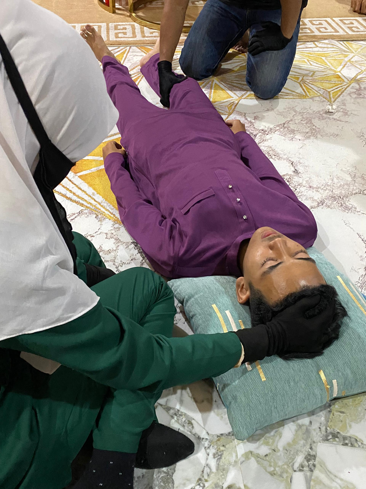

In life, not everything can be explained by science or logic. I once had a personal experience that really affected my emotions and helped me understand that unseen things do exist. This experience involved my niece/nephew, who we believed was affected by black magic.
At first, my niece/nephew was a happy and active child. But suddenly, they changed. They became very quiet, cried for no reason, and looked scared all the time. Our family thought it was just a normal sickness or maybe stress.
We brought them to the clinic and hospital many times, but the doctors couldn’t find anything wrong. Things got worse when my niece/nephew started talking alone and said they could hear strange voices. We became more worried and decided to try Islamic healing by seeing a religious healer.

After a few sessions, the healer told us that someone had used black magic on my niece/nephew. That person might have had bad intentions toward our family. As Muslims, we didn’t want to blame anyone without proof, but we believed that only Allah knows the truth. We continued with the healing sessions, prayed a lot, and supported the child. Alhamdulillah, after a few months, my niece/nephew got better and became happy again.
This experience taught me and my family to always stay close to Allah and follow our religion. It also reminded us to be careful with the people around us. Even in modern times, black magic and jealousy still exist, and they can harm anyone.